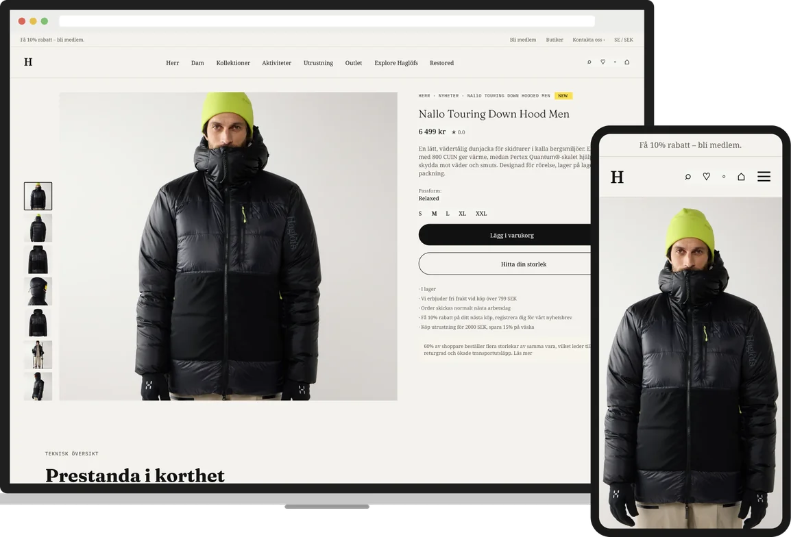
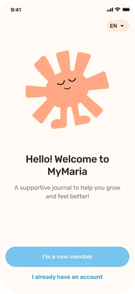
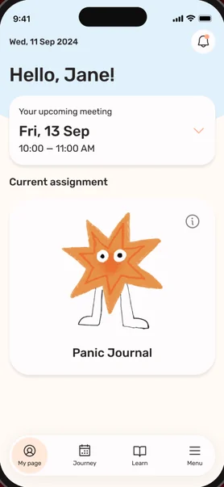
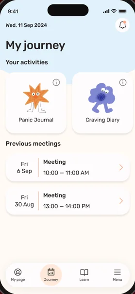
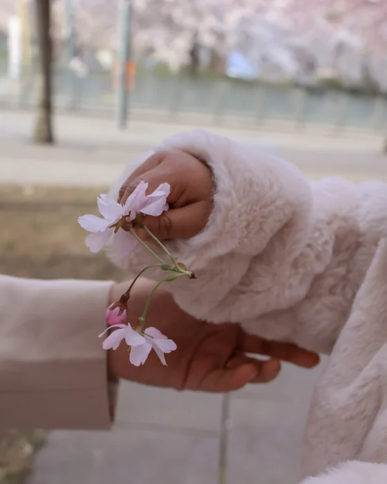

Haglöfs
A product page redesign that turns dense technical specs into a clear, premium shopping experience, revealing detail only when shoppers want it.
Client project · via Hyper Island UX/UI · Research · Visual design 2026
I’m a UX/UI and digital designer.
I make complex products feel simple, and I create the content that helps people understand them. Six years in law taught me where people get lost. Research tells me how to guide them.
Interviews, journey maps and user tests. Claude and ChatGPT help me cluster findings.
Flows and interfaces in Figma that make complex things feel simple and calm.
Images and words that explain the product, made with care and AI tools like Magnific.
User tests and data show what works. I decide with evidence, then go back and improve.
the same loop for screens, images & words

A product page redesign that turns dense technical specs into a clear, premium shopping experience, revealing detail only when shoppers want it.
Client project · via Hyper Island UX/UI · Research · Visual design 2026



A treatment companion app for young people at Maria Ungdom, designed to feel safe, calm and encouraging, from first download to daily check-ins.
Client project · Maria Ungdom · via Hyper Island Role: UX designer · 6 weeks · Team of 4 Expert interviews · User journey · User testing
First legal language, turned into agreements people could understand. Then three novels, from English to Persian. Now complex products, turned into clear screens and content. And off-screen, people’s stories, through my camera.
More about me